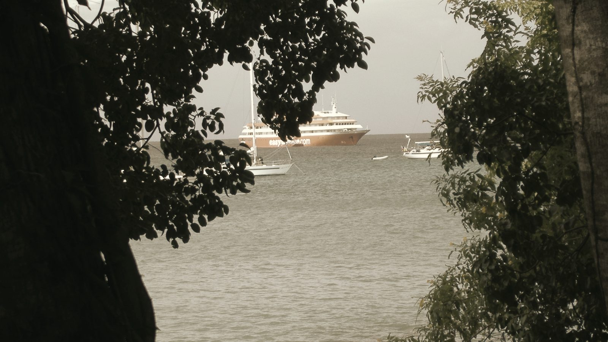

Thinking · Getting things here
Shipping and sourcing
Almost everything we build with has to come from somewhere: Grenada, the wider Caribbean, the United States, or China. Each route has a real case for it and a real case against. This is how they compare on the evidence we have so far.
Rob Berkeley · October 2026
Four markets
In September we priced the core of the house work, the windows, doors, shutters, sanitaryware and the rest, landed at Simon from four markets. On that basis China came out at less than half the Grenadian shelf price, with the Caribbean and the US both dearer than Grenada. A few things, like the water tank, septic tank, masonry and most furniture, are bought in Grenada whatever happens.
The headline flatters China, though. Many items were below factory minimum order quantities, so small-order premiums apply. Even at a punitive three times, China still came out cheaper on cost. It didn't win on certification, lead time or recourse when something goes wrong.
The case for China
Price, range and specification. Some products we need, such as an impact-rated sliding door, simply aren't stocked in certified form on the island; the local slider we were quoted isn't impact-rated. The guest suites are flat-pack steel modules from Chinese factories, and one factory has given an early indication per suite. Ordering from factories also means we can ask for exactly what suits a coastal hurricane zone: marine-grade metals, coastal coatings, 230 volts and 50 hertz.
The case against China
Distance, time and trust. Door to site takes roughly three to five months, against days or weeks for stock in Grenada. The China order has to be loaded by mid-January, before Chinese New Year closes the factories; miss it and everything slips by about two months, pushing the build towards hurricane season. Quality has to be checked before we pay the balance, because once a container has sailed, recourse is thin. And AI sourcing tools, useful for finding suppliers, got freight and duty badly wrong when we tested them, so every figure has to be checked.
The container and the freight
Goodhope Freight quoted US$14,700 for a forty-foot high-cube container from Nansha to St George's, port to port, about 21 days at sea. An AI tool had estimated less than half that. The freight question turns out to come before the product question. Shared or partly filled, China stays cheaper on almost every package for the house. Booked for the house cargo alone, a whole container flips most packages back to Grenada. Combining the house and business goods into one box, and keeping the box as the pool, changes the sums again. Freight costs have also been rising: one local solar firm paused quoting in October because container shipping had gone up by around 40 per cent.
Agents and their fees
Ordering from a dozen factories alone, from London, is a recipe for mistakes. A sourcing agent checks factories, inspects goods, consolidates them into one container and handles the paperwork. Done properly, agents, inspection, consolidation and payment protection could add around 40 per cent to the cost of the goods, on our own estimate. Commissions typically run from about 3 to 10 per cent depending on the size of the order, and some agents offer a flat fee instead. One Guangzhou firm on our shortlist, with Caribbean hotel work behind it, charges 5 per cent on suppliers we've already found. In October I contacted four possible agents, two of them with a presence in Grenada. None is appointed yet. The argument for an agent is protection. The argument against is cost, and one more party between us and the factory.
Duty, CSC and VAT
Imports into Grenada carry customs duty, a customs service charge of 6 per cent and VAT of 15 per cent. Together they add about 40 per cent to the cost of goods and freight on our mix. We've asked GIDC, Grenada's investment agency, for relief, and they haven't answered yet. Readings differ on whether relief covers duty only or VAT as well. There's also a cash-flow catch: on one estimate, tens of thousands of East Caribbean dollars in customs and VAT are due on arrival, before release. Buying in Grenada means those taxes are already in the shelf price, which is one reason the gap is smaller than it first looks.
The local economy
This is the trade-off I find hardest. Grenadian contractors will build the house, with local electricians and plumbers. The kitchen equipment is planned from a distributor on the island, so it can be serviced there, and the kitchen joinery from a local cabinetmaker. A Grenadian firm advertises glass-fronted units like our suites, at more than the import route, though it's probably reselling Chinese units itself. Grenada's own retailers already buy much of their stock from Trinidad and beyond. So buying locally doesn't always mean buying local goods. It does mean local jobs, a warranty you can drive to, and no container to chase.
Where things stand
Decided so far: impact-rated openings and the suite modules from China; heavy and bulky basics, appliances and kitchen equipment from Grenada; one shared container, kept for the pool. Not decided: which agent, which broker at St George's, whether GIDC relief comes through, and the final freight quote. What would change it: a planning delay that misses the January sailing, a freight rise, a GIDC refusal, or a local price that closes the gap. Any of those would shift more of the order back to the island.